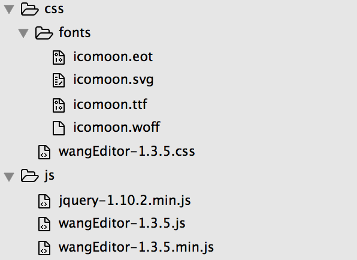
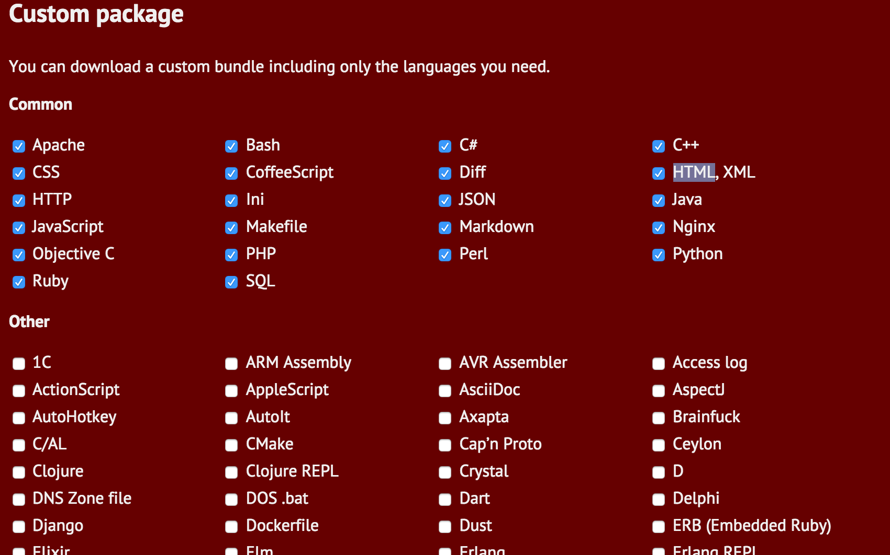
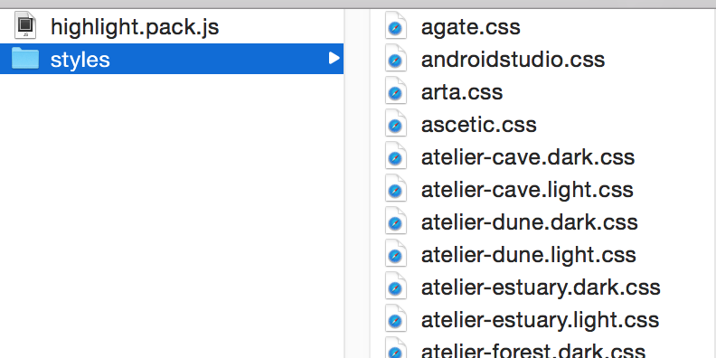
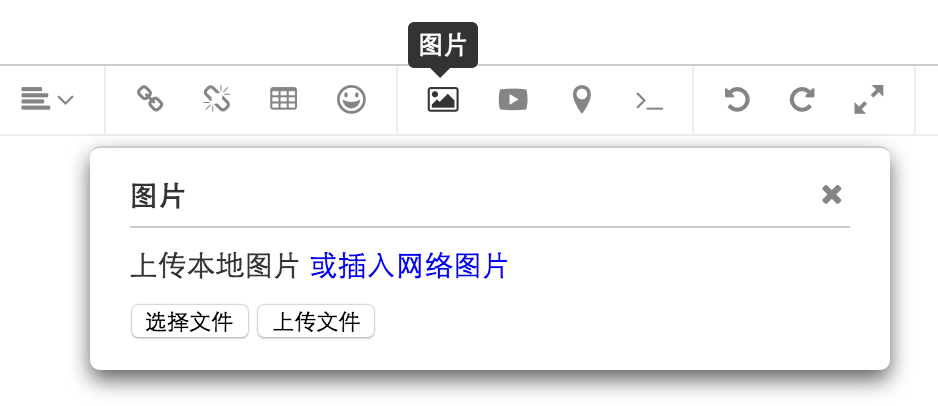
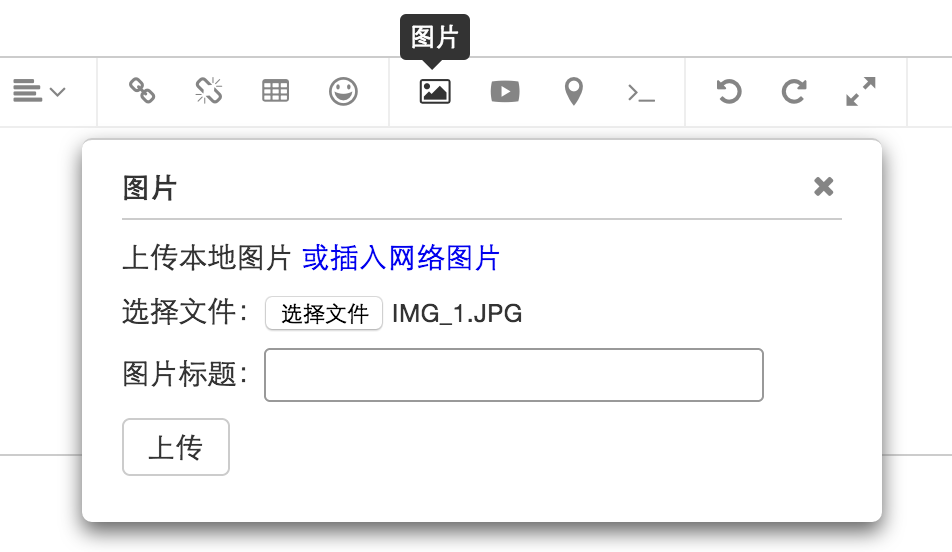

wangEditor —— 轻量级html富文本编辑器
wangEditor是一款基于javascript和css开发的html富文本编辑器，开源免费。
- 与常用的国产编辑器 百度ueditor 和 kindeditor 相比，它轻量、易用、UI设计精致漂亮，兼容IE低版本浏览器。
- 与国外编辑器 bootstrap-wysiwyg 和 simditor 相比，它文档易读、交流方便，更接地气，还可直接与作者沟通，提交问题和建议。
- 它还会根据使用者的反馈不断完善，未来将支持移动版。
链接
- 官网：www.wangeditor.com
- demo：www.wangeditor.com
- 下载：wangeditor.zip
- github：github.com/wangfupeng1988/wangEditor/
交流
- 加入QQ群：164999061
- 提交建议和问题：https://github.com/wangfupeng1988/wangEditor/issues
捐赠
欢迎捐赠，为开源软件积攒能量！请用支付宝扫描已下二维码。 查看捐赠者名单
了解作者
基本应用
使用wangEditor非常简单，只需要下载相应的javascript文件、css文件， 根据以下文档说明，几分钟即可搭建一个html富文本编辑器。
开始使用
第一步，下载wangEditor所必要的文件 （下载链接）， 下载的文件结构如下图所示。
针对该文件结构，请注意以下几点：
- fonts文件夹及其非常重要，不要丢失。并且要和css文件放在一个目录下。
- 截图以1.3.5版本为例演示的，不一定是用户当前使用的版本。
第二步，创建一个页面，引用wangEditor的css文件、js文件，还有引用jquery。 jquery只支持1.7及以上版本
<!--引入wangEditor.css-->
<link rel="stylesheet" type="text/css" href="css/">
……省略其他内容……
<!--引入jquery和wangEditor.js--> <!--注意：javascript必须放在body最后，否则可能会出现问题-->
<script type="text/javascript" src='js/jquery-1.10.2.min.js'></script>
<script type="text/javascript" src='js/'></script>
第三步，在html页面中创建一个textarea标签，可自定义设置其高度。 此处设置的高度，将是编辑器的高度。 最后，获取这个textarea节点，并执行wangEditor()方法。
<!--创建一个 textarea 标签-->
<textarea id='textarea1' style='height:300px; width:100%;'></textarea>
……省略其他内容……
<!--注意：javascript必须放在body最后，否则可能会出现问题-->
<script type="text/javascript">
$(function(){
var editor = $('#textarea1').wangEditor();
});
</script>
这样，一个最简单的demo，就成功搭建起来了。 可参见 在线的demo
设置高度
wangEditor设置高度有两种方法： 第一，设置一个绝对高度；第二，设置一个默认高度、和一个最大高度。
设置绝对高度：
设置绝对高度只需要给 textarea 设置一个 height 样式即可。 但是请注意， 定义的高度不要小于80px ，否则 wangEditor 会强项处理为 80px。
<!--设置绝对高度-->
<textarea id='textarea1' style='height:200px; width:100%;'>
</textarea>
设置默认高度和最大高度：
在以上设置绝对高度的基础上，再给 textarea 增加一个 max-height 样式， 即可设置默认高度和最大高度。注意： max-height 的值不要小于等于 height 的值，否则无效 。
设置完了之后，wangEditor 编辑器区域的高度，会随着内容的变化， 在默认高度和最大高度之间变化。 可参见 在线的demo
<!--设置默认高度、最大高度-->
<textarea id='textarea1' style='height:200px; max-height:400px; width:100%;'>
</textarea>
初始化内容
第一，可以在textarea标签增加内容， 这些内容会在执行wangEditor()方法时自动附加到编辑器中。 可参见 在线的demo
<!--可在此设置高度、宽度-->
<textarea id='textarea1' style='height:300px; width:100%;'>
<p>最简单的demo</p>
</textarea>
注意，textarea的内容一定要在执行wangEditor()方法前添加进去，否则无效！
第二，可以通过html()方法赋值，该方法将会全部覆盖原内容。 可参见 在线的demo
//执行 wangEditor 方法即可根据 textarea 生成编辑器
var editor = $('#textarea1').wangEditor();
//点击按钮时，将当前最新时间赋值到编辑器中（覆盖之前的内容）
$('#btn').click(function(e){
var dt = new Date();
editor.html('<p>当前的时间是：' + dt.toString() + '</p>');
});
获取内容
用户在使用编辑器时，源码都是实时更新到textarea中。 用户可以通过textarea获取编辑器的源码值。 可参见 在线的demo
var editor = $('#textarea1').wangEditor();
//点击按钮，获取编辑器的源码
$('#btn').click(function(){
var html = $('#textarea1').val();
});
追加内容
可通过append方法向编辑器中追加内容，包括jquery对象和字符串。 可参见 在线的demo
var editor = $('#textarea1').wangEditor();
//点击按钮，追加内容
$('#btn').click(function(e){
//追加jquery对象
var $p = $('<p>wangEditor，轻量级富文本编辑器。</p>');
editor.append($p);
//追加字符串
editor.append('欢迎使用wangEditor');
//注意，插入字符串时，不能插入零碎的html片段（如 '123 ' 等），否则会报错！
});
基本配置
在使用wangEditor生成富文本框时，可以加一些配置项来满足你的个性需求。 以下是一些基本配置，还有高级配置，在下文讲解。
//基本配置的参数如下：
var editor = $('#textarea1').wangEditor({
menuConfig: [...], //自定义配置菜单
onchange: function(){...}, //自定义配置onchange监听事件
expressions: [...] //自定义配置表情图标
});
添加change监听事件
在创建编辑器时，可通过传入 onchange 参数，来监听编辑器内容的变化。 就像浏览器自带的 textarea 的 onchange 事件一样。 可参见 在线的demo
另外，onchange 参数中必须传入一个函数，该函数的 html 参数即编辑器最新内容的源码。
//onchange配置
var editor = $('#textarea1').wangEditor({
'onchange': function(html){
//html参数即编辑器内容的源码
alert('onchange事件触发，最新的html为：\n' + html);
}
});
自定义配置表情图标
在创建编辑器时，可传入 expressions 参数，自定义配置表情图标。
配置简单的表情图标：
传入简单的一维数组可配置最简单的表情图标，参见 在线的demo ， 系统默认的表情包下载如下： 默认表情包
自定义配置表情的好处是： wangEditor默认提供的免费服务比较慢，使用者可以将表情添加到自己的服务器中，提高速度。
//自定义表情
var editor = $('#textarea1').wangEditor({
'expressions': [
'http://www.wangeditor.com/expressions/29.gif',
'http://www.wangeditor.com/expressions/27.gif',
'http://www.wangeditor.com/expressions/59.gif'
]
});
PS：有用户曾抱怨说，如果表情图标很多，挨个填写会很麻烦 ——— 其实，expressions 参数传入的仅仅是一个数组而已，至于这个数组如何拼接，我想应该有N种方式。 发挥你的想象力，不必拘泥于这一个例子。
配置多组表情：
传入一个二维数组，可以自定义配置多组表情，如上图。可参考 在线的demo
//配置多组表情
$('#textarea1').wangEditor({
'expressions': [{
'title': '默认',
'items': [
'default/1.gif',
'default/2.gif',
'default/3.gif'
]
},{
'title': '金星',
'items': [
'jinxing/1.gif',
'jinxing/2.gif'
]
},{
'title': '卖萌海狮',
'items': [
'sealion/1.gif',
'sealion/2.gif'
]
}]
}); // wangEditor配置 end
配置代码高亮
wangEditor自带的代码插入功能，比较简单，也没有高亮功能。 下面介绍一种简单的方法，几分钟即可让wangEditor拥有代码高亮功能 ———— wangEditor可以集成 hightlight 插件来实现代码高亮。 可查看 在线的demo
第一步，你需要下载 hightlight 插件
国外网站访问比较慢，你可以快速下载作者整理好的， 但是，它只能支持20多种常用语言。 想要支持更多语言， 请点击 https://highlightjs.org/download/ 里面有上百种语言供你选择、打包下载。
下载之后，可以得到一个 highlight.pack.js 和一个 style 文件夹，其中有很多个 css 文件。 从这些 css 文件名，你就可以看出，每一个 css 文件就是一个主题包。 想要哪种代码高亮的样式主题，就引用哪一个 css 到页面中！

第二步，在页面中引用 highlight 的 css 和 js 文件
<!--在 head 中引用 css 文件-->
<!--style文件夹中，每一个css就是一个样式主题，可自行选择-->
<link rel="stylesheet" type="text/css" href="highlightJS/styles/github.css">
...省略若干内容...
<!--在 body 最下方引用 javascript 文件-->
<!--引用jquery、highlight.pack.js-->
<script type="text/javascript" src="js/jquery-1.10.2.min.js"></script>
<script type="text/javascript" src="highlightJS/highlight.pack.js"></script>
第三步，执行 hightlight 的方法
<!-- 引用jquery、highlight.pack.js 之后，再执行如下代码-->
<script type="text/javascript">
$(function(){
$('pre code').each(function(i, block) {
hljs.highlightBlock(block);
});
});
</script>
至此，hightlight 插件已经集成到了页面中。
那么如何将它集成进 wangEditor 呢 ———— 答案：不用集成！ 你只需要在这个页面的基础上做一个 wangEditor 编辑器即可， wangEditor会自动识别你是否引用了 highlight 插件。
不会的同学，可参考开始使用一节
以上都做完了，你会发现 wangEditor 的“插入代码”界面中，
多了选择语言的下拉框，插入代码后，也有了高亮效果，快去试试吧！
图片上传
wangEditor的图片上传分为跨域和非跨域两种情况，但是只能选择一种使用。 如果同时使用，则以跨域为准。
- 非跨域上传，借用plupload插件，上传功能强大，支持多文件上传、拖拽上传、图片预览等，但不支持跨域。 但需要自己写前端界面，并集成进wangEditor中。
- 跨域上传，采用wangEditor自带的上传组件，功能简单。 无需自己编写界面，只需要传入 url 地址即可。 但需要服务器后台做相应的处理。
可根据自己项目的情况，选择使用其中一个。 PS: 我暂时没有找到 plupload 跨域上传的方法，如果有同学知道，不妨给我分享一下！
//图片上传的配置参数
var editor = $('#textarea1').wangEditor({
uploadImgComponent: $('#someId'), //非跨域图片上传组件
uploadUrl: '...' //跨域图片上传的url
});
图片上传(非跨域)
【附： 视频讲解图片上传 以及 视频中的代码下载 ，请参考】
非跨域的图片上传将借助 plupload 插件来实现。 你可以放心使用该插件，因为七牛云存储的javascript上传中，也借用了该插件。
plupload插件功能非常强大，尚未使用的同学，可以参考以下链接：
- plupload使用介绍
- plupload常用功能demo演示 （可查看demo网页的源码，学习如何配置）
- plupload文档
第一步，先建立一个plupload上传图片的页面，以下代码是关键部分。
……省略部分代码……
<div id="uploadContainer">
<input type="button" value="选择文件" id="btnBrowse"/>
<input type="button" value="上传文件" id="btnUpload">
<ul id="fileList"></ul>
</div>
……省略部分代码……
<!--引入jquery、plupload.js-->
<script type="text/javascript" src="js/jquery-1.10.2.min.js"></script>
<script type="text/javascript" src="plupload/plupload.full.min.js"></script>
<script type="text/javascript">
$(function(){
//获取dom节点
var $uploadContainer = $('#uploadContainer'),
$fileList = $('#fileList'),
$btnUpload = $('#btnUpload');
//实例化一个上传对象
var uploader = new plupload.Uploader({
browse_button: 'btnBrowse',
url: 'upload.ashx',
flash_swf_url: 'plupload/Moxie.swf',
sliverlight_xap_url: 'plupload/Moxie.xap',
filters: {
mime_types: [
//只允许上传图片文件 （注意，extensions中，逗号后面不要加空格）
{ title: "图片文件", extensions: "jpg,gif,png,bmp" }
]
}
});
//存储所有图片的url地址
var urls = [];
//初始化
uploader.init();
//绑定文件添加到队列的事件
uploader.bind('FilesAdded', function (uploader, files) {
//显示添加进来的文件名
$.each(files, function(key, value){
var fileName = value.name,
html = '<li>' + fileName + '</li>';
$fileList.append(html);
});
});
//单个文件上传之后
uploader.bind('FileUploaded', function (uploader, file, responseObject) {
//注意，要从服务器返回图片的url地址，否则上传的图片无法显示在编辑器中
var url = responseObject.response;
//先将url地址存储来，待所有图片都上传完了，再统一处理
urls.push(url);
});
//全部文件上传时候
uploader.bind('UploadComplete', function (uploader, files) {
//打印出所有图片的url地址
$.each(urls, function (key, value) {
console.log(value);
});
//清空url数组
urls = [];
//清空显示列表
$fileList.html('');
});
//上传事件
$btnUpload.click(function(){
uploader.start();
});
});
</script>
第二步，在该页面的基础上，引用wangEitor的css、js，添加textarea，生成编辑器。 不明白的同学，可参见开始使用一节。之后该页面的代码如下：
<!--引入wangEditor.css-->
<link rel="stylesheet" type="text/css" href="css/">
……省略其他内容……
<div id="uploadContainer">
<input type="button" value="选择文件" id="btnBrowse"/>
<input type="button" value="上传文件" id="btnUpload">
<ul id="fileList"></ul>
</div>
<textarea id='textarea1' style='height:300px; width:100%;'></textarea>
……省略其他内容……
<!--引入jquery、wangEditor.js、plupload.js-->
<script type="text/javascript" src='js/jquery-1.10.2.min.js'></script>
<script type="text/javascript" src='js/'></script>
<script type="text/javascript" src="plupload/plupload.full.min.js"></script>
<script type="text/javascript">
$(function(){
//获取dom节点
var $uploadContainer = $('#uploadContainer'),
$fileList = $('#fileList'),
$btnUpload = $('#btnUpload');
var editor = $('#textarea1').wangEditor();
……plupload配置的内容……
});
</script>
截止到此，plupload和wangEditor的功能都是相互独立的，两者没有任何关系。 此时，你点击“图片”菜单，肯定得不到你想要的结果（如下图）。 接下来，我们将把两者结合起来。

第三步，我们将对合并出来的代码进行改造， 改造之后，wangEditor将把plupload的功能集成进来。 需要改造的地方有：
- 配置wangEditor()方法的 uploadImgComponent 参数，传入 $uploadContainer
- 定义event变量，用于存储上传事件中的event对象
- 所有文件上传完成之后，使用 editor.command() 方法插入图片
具体内容可参考如下代码高亮部分
<!--引入wangEditor.css-->
<link rel="stylesheet" type="text/css" href="css/">
……省略其他内容……
<div id="uploadContainer">
<input type="button" value="选择文件" id="btnBrowse"/>
<input type="button" value="上传文件" id="btnUpload">
<ul id="fileList"></ul>
</div>
<textarea id='textarea1' style='height:300px; width:100%;'></textarea>
……省略其他内容……
<!--引入jquery、wangEditor.js、plupload.js-->
<script type="text/javascript" src='js/jquery-1.10.2.min.js'></script>
<script type="text/javascript" src='js/'></script>
<script type="text/javascript" src="plupload/plupload.full.min.js"></script>
<script type="text/javascript">
$(function(){
//获取dom节点
var $uploadContainer = $('#uploadContainer'),
$fileList = $('#fileList'),
$btnUpload = $('#btnUpload');
var editor = $('#textarea1').wangEditor({
//传入 uploadImgComponent 参数，值为 $uploadContainer
uploadImgComponent: $uploadContainer
});
//实例化一个上传对象
var uploader = new plupload.Uploader({
browse_button: 'btnBrowse',
url: 'upload.ashx',
flash_swf_url: 'plupload/Moxie.swf',
sliverlight_xap_url: 'plupload/Moxie.xap',
filters: {
mime_types: [
//只允许上传图片文件 （注意，extensions中，逗号后面不要加空格）
{ title: "图片文件", extensions: "jpg,gif,png,bmp" }
]
}
});
//存储多个图片的url地址
var urls = [];
//定义 event 变量，会在下文（触发上传事件时）被赋值
var event;
//初始化
uploader.init();
//绑定文件添加到队列的事件
uploader.bind('FilesAdded', function (uploader, files) {
//显示添加进来的文件名
$.each(files, function(key, value){
var fileName = value.name,
html = '<li>' + fileName + '</li>';
$fileList.append(html);
});
});
//单个文件上传之后
uploader.bind('FileUploaded', function (uploader, file, responseObject) {
//从服务器返回图片url地址
var url = responseObject.response;
//先将url地址存储来，待所有图片都上传完了，再统一处理
urls.push(url);
});
//全部文件上传时候
uploader.bind('UploadComplete', function (uploader, files) {
$.each(urls, function (key, value) {
//调用 editor.command 方法，把每一个图片的url，都插入到编辑器中
//此处的 event 即上文定义的 event 变量
editor.command(event, 'insertHTML', '<img src="' + value + '"/>');
});
//清空url数组
urls = [];
//清空显示列表
$fileList.html('');
});
//上传事件
$btnUpload.click(function(e){
//将事件参数 e 赋值给 上文定义的 event 变量
event = e;
uploader.start();
});
});
</script>
至此，配置结束。此时在此点击“图片”按钮，就能使用plupload上传图片了。
后台代码示例（非跨域）
上文描述了非跨域上传时，前端代码如何编写，以下是后台代码的示例。 以下只是代码的示例，供开发者参考。 但是不能保证在每个环境下都能运行成功，开发者可根据自己的情况做相应调整。
C#示例参考：
//文件名：upload.ashx
<%@ WebHandler Language="C#" Class="upload" %>
using System;
using System.Web;
public class upload : IHttpHandler
{
public void ProcessRequest (HttpContext context)
{
context.Response.ContentType = "text/plain";
context.Response.Charset = "utf-8";
var files = context.Request.Files;
if (files.Count <= 0)
{
return;
}
HttpPostedFile file = files[0];
if (file == null)
{
context.Response.Write("file is null");
return;
}
else
{
string path = context.Server.MapPath("~/uploadedFiles/"); //存储图片的文件夹
string originalFileName = file.FileName;
string fileExtension = originalFileName.Substring(originalFileName.LastIndexOf('.'), originalFileName.Length - originalFileName.LastIndexOf('.'));
string currentFileName = (new Random()).Next() + fileExtension; //文件名中不要带中文，否则会出错
//生成文件路径
string imagePath = path + currentFileName;
//保存文件
file.SaveAs(imagePath);
//获取图片url地址
string imgUrl = context.Request.Url.GetLeftPart(UriPartial.Authority) + "/wangEditor_upload_test/uploadedFiles/" + currentFileName;
//返回图片url地址
context.Response.Write(imgUrl);
return;
}
}
public bool IsReusable
{
get
{
return false;
}
}
}
java示例参考：
//java示例参考
package com.demo.servlet;
import java.io.File;
import java.io.FileOutputStream;
import java.io.IOException;
import java.io.InputStream;
import java.io.PrintWriter;
import java.util.Dictionary;
import java.util.List;
import java.util.UUID;
import javax.servlet.ServletException;
import javax.servlet.http.HttpServlet;
import javax.servlet.http.HttpServletRequest;
import javax.servlet.http.HttpServletResponse;
import org.apache.commons.fileupload.FileItem;
import org.apache.commons.fileupload.disk.DiskFileItemFactory;
import org.apache.commons.fileupload.servlet.ServletFileUpload;
import com.sun.xml.internal.ws.wsdl.writer.document.Part;
public class UploadImgServiet extends HttpServlet {
public UploadImgServiet() {
super();
}
public void destroy() {
super.destroy(); // Just puts "destroy" string in log
// Put your code here
}
public void doGet(HttpServletRequest request, HttpServletResponse response)
throws ServletException, IOException {
doPost(request, response);
}
public void doPost(HttpServletRequest request, HttpServletResponse response)
throws ServletException, IOException {
String path = request.getRealPath("/image");
File file = new File(path);
if (!file.exists())
file.mkdirs();
String fileName = "";// 文件名称
/**上传文件处理内容**/
DiskFileItemFactory factory = new DiskFileItemFactory();
ServletFileUpload sfu = new ServletFileUpload(factory);
sfu.setHeaderEncoding("UTF-8"); // 处理中文问题
sfu.setSizeMax(1024 * 1024); // 限制文件大小
try {
List fileItems = sfu.parseRequest(request); // 解码请求
for (FileItem fi : fileItems) {
fileName = UUID.randomUUID()+fi.getName().substring(fi.getName().lastIndexOf("."),fi.getName().length());
fi.write(new File(path, fileName));
}
} catch (Exception e) {
e.printStackTrace();
}
/**********************/
//获取图片url地址
string imgUrl = "http://localhost:8080/wang_editor_demo/image/" + fileName;
response.setContentType("text/text;charset=utf-8");
PrintWriter out = response.getWriter();
out.print(imgUrl); //返回url地址
out.flush();
out.close();
}
public void init() throws ServletException {
// Put your code here
}
}
征集，为开源软件贡献力量！ 现征集其他后台语言的示例代码，如php、nodejs、python、ruby等， 有意者可直接给我发邮件：642009075#qq.com ( # -> @)， 作者将不胜感激！
图片上传(跨域)
【附： 视频讲解跨域图片上传 以及 视频中的代码下载 ，请参考】
使用wangEditor配置图片跨域上传并不复杂，可根据以下步骤操作。
第一步，下载 wangEditor_uploadImg_assist.html 并放在你的项目中。然后，得到这个页面的url地址。
http://localhost:8080/wangEditor_uploadImg_assist.html
第二步，编写后台代码。 注意，以下仅是算法描述，你可以使用asp.net、jsp、php等任何web框架，来实现该程序。 请注意算法描述中高亮部分。
//类型必须是 "text/html"
response.ContentType = "text/html";
response.Charset = "utf-8";
//获取第一步中得到的 wangEditor_uploadImg_assist.html 页面的url地址
string assitUrl = "http://localhost:8080/wangEditor_uploadImg_assist.html";
//获取文件对象
File file = request.Files[0];
//你可以可以通过 File file = request.Files["wangEditor_uploadImg"]; 来获取文件对象
//用该方法获取时，key必须写“wangEditor_uploadImg”，否则出错
//验证、保存文件，省略此处代码
if(success) {
//如果保存成功
//获取图片的url地址
string imgUrl = ...省略此处代码...;
//assitUrl 即 wangEditor_uploadImg_assist.html 的url地址
//别忘了“ok|”
string iframeSrc = assitUrl + "#" + "ok|" + imgUrl;
//拼接最终结果
string result = "<iframe src=\"" + iframeSrc + "\"></iframe>";
//返回
response.Write(result);
response.End();
return;
} else {
//如果失败
//此处的“上传失败”可随意填写
string iframeSrc = assitUrl + "#" + "上传失败";
string result = "<iframe src=\"" + iframeSrc + "\"></iframe>";
response.Write(result);
response.End();
return;
}
第三步，把服务器的url地址，传入到 wangEditor() 方法中。
//配置如下
var editor = $('#textarea1').wangEditor({
'uploadUrl': 'http://localhost:4780/data.ashx'
});
至此，点击“图片”菜单，将得到你想要的结果。
后台代码示例（跨域）
上文描述了跨域上传时，前端代码如何编写，以下是后台代码的示例。 以下只是代码的示例，供开发者参考。 但是不能保证在每个环境下都能运行成功，开发者可根据自己的情况做相应调整。
C#示例参考：
//文件名称：upload_cross_domain.ashx
<%@ WebHandler Language="C#" Class="data" %>
using System;
using System.Web;
using System.IO;
public class data : IHttpHandler
{
public void ProcessRequest (HttpContext context)
{
//设置文件类型和编码类型
context.Response.ContentType = "text/html";
context.Response.Charset = "utf-8";
//获取web前端 wangEditor_uploadImg_assist.html 页面的url地址
string assistUrl = "http://localhost:8080/wangEditor_uploadImg_assist.html";
//取得文件对象
HttpPostedFile file = context.Request.Files[0];
//HttpPostedFile file = context.Request.Files["wangEditor_uploadImg"];
if (file == null)
{
string iframeSrc = assistUrl + "#" + "未成功获取文件，上传失败";
string result = "<iframe src=\"" + iframeSrc + "\"></iframe>";
context.Response.Write(result);
context.Response.End();
return;
}
else
{
//验证通过了，最后保存文件
string path = context.Server.MapPath("~/uploadedFiles/");
string originalFileName = file.FileName;
string fileExtension = originalFileName.Substring(originalFileName.LastIndexOf('.'), originalFileName.Length - originalFileName.LastIndexOf('.'));
string currentFileName = (new Random()).Next() + fileExtension; //文件名中不要带中文，否则会出错
//生成文件路径
string imagePath = path + currentFileName;
//保存文件
file.SaveAs(imagePath);
//保存文件之后，要告诉web前端上传已经成功了
//获取图片的url
string imgUrl = context.Request.Url.GetLeftPart(UriPartial.Authority) + "/wangEditor_upload_test/uploadedFiles/" + currentFileName;
string iframeSrc = assistUrl + "#" + "ok|" + imgUrl;
string result = "<iframe src=\"" + iframeSrc + "\"></iframe>";
context.Response.Write(result);
context.Response.End();
return;
}
}
public bool IsReusable
{
get
{
return false;
}
}
}
java示例参考：
package com.demo.servlet;
import java.io.File;
import java.io.FileOutputStream;
import java.io.IOException;
import java.io.InputStream;
import java.io.PrintWriter;
import java.util.Dictionary;
import java.util.List;
import java.util.UUID;
import javax.servlet.ServletException;
import javax.servlet.http.HttpServlet;
import javax.servlet.http.HttpServletRequest;
import javax.servlet.http.HttpServletResponse;
import org.apache.commons.fileupload.FileItem;
import org.apache.commons.fileupload.disk.DiskFileItemFactory;
import org.apache.commons.fileupload.servlet.ServletFileUpload;
import com.sun.xml.internal.ws.wsdl.writer.document.Part;
public class UploadImgServiet extends HttpServlet {
public UploadImgServiet() {
super();
}
public void destroy() {
super.destroy(); // Just puts "destroy" string in log
// Put your code here
}
public void doGet(HttpServletRequest request, HttpServletResponse response)
throws ServletException, IOException {
doPost(request, response);
}
public void doPost(HttpServletRequest request, HttpServletResponse response)
throws ServletException, IOException {
String path = request.getRealPath("/image");
File file = new File(path);
if (!file.exists())
file.mkdirs();
String fileName = "";// 文件名称
/**上传文件处理内容**/
DiskFileItemFactory factory = new DiskFileItemFactory();
ServletFileUpload sfu = new ServletFileUpload(factory);
sfu.setHeaderEncoding("UTF-8"); // 处理中文问题
sfu.setSizeMax(1024 * 1024); // 限制文件大小
try {
List fileItems = sfu.parseRequest(request); // 解码请求
for (FileItem fi : fileItems) {
fileName = UUID.randomUUID()+fi.getName().substring(fi.getName().lastIndexOf("."),fi.getName().length());
fi.write(new File(path, fileName));
}
} catch (Exception e) {
e.printStackTrace();
}
/**********************/
//组织http响应数据，返回html内容
//src="页面地址#ok|图片路径"
String html = "<iframe src='http://localhost:8080/wang_editor_demo/wangEditor_uploadImg_assist.jsp#ok|http://localhost:8080/wang_editor_demo/image/"+fileName+"'></iframe>";
response.setContentType("text/html;charset=utf-8");
PrintWriter out = response.getWriter();
out.print(html);
out.flush();
out.close();
}
public void init() throws ServletException {
// Put your code here
}
}
征集，为开源软件贡献力量！ 现征集其他后台语言的示例代码，如php、nodejs、python、ruby等， 有意者可直接给我发邮件：642009075#qq.com ( # -> @)， 作者将不胜感激！
其他
以下内容的添加，主要感谢wangEditor使用者的反馈和建议。 也希望更多的使用者反馈你们的建议和问题，只要建议合理，我肯定会及时修改、添加。
多语言支持
默认使用中文：
默认情况下，不做任何语言的配置，wangEditor 会选择使用中文。
使用英文：
在多语言环境中，除了中文之外，使用英文的概率最大。因此 wangEditor 对英文做了快捷配置。只需要在执行 wangEditor() 方法时候，传入一个简单的标识即可。 可参见在线demo演示
PS：如果发现英文翻译不对，欢迎在QQ群（164999061）反馈给我。
//配置英文
var editor = $('#textarea1').wangEditor({
'lang': 'en'
});
使用其他语言：
wangEditor 支持自定义配置其他语言。 你只需要将自己定义的语言对象（JSON格式）传入到 wangEditor() 方法中即可。
//自定义配置语言
var langConfig = {
//...语言配置（格式见下文）...
};
var editor = $('#textarea1').wangEditor({
'lang': langConfig
});
语言的配置格式如下（以中文为例）：
//中文配置如下：
var langConfig = {
//通用语言配置
'common': {
'insert': '插入',
'submit': '提交',
'update': '更新',
'cancel': '取消',
'close': '关闭',
'upload': '上传',
'unsafeAlert': '输入的内容不安全，请重新输入！',
'formatError': '输入的内容格式错误，请重新输入！'
},
//菜单语言配置
'menus': {
'viewSourceCode': {
'title': '查看源码'
},
'bold': {
'title': '加粗'
},
'underline': {
'title': '下划线'
},
'italic': {
'title': '斜体'
},
'removeFormat': {
'title': '清除格式'
},
'indent': {
'title': '增加缩进'
},
'outdent': {
'title': '减少缩进'
},
'foreColor': {
'title': '字体颜色'
},
'backgroundColor': {
'title': '背景色'
},
'strikethrough': {
'title': '删除线'
},
'blockquote': {
'title': '引用'
},
'fontFamily': {
'title': '字体'
},
'fontSize': {
'title': '字号'
},
'setHead': {
'title': '标题',
'content': '正文'
},
'list': {
'title': '列表',
'unOrdered': {
'title': '无序列表'
},
'ordered': {
'title': '有序列表'
}
},
'justify': {
'title': '对齐',
'left': {
'title': '左对齐'
},
'center': {
'title': '居中'
},
'right': {
'title': '右对齐'
}
},
'createLink': {
'title': '插入链接',
'modal': {
'link': '链接',
'title': '标题',
'blank': '新窗口'
}
},
'unLink': {
'title': '取消链接'
},
'insertTable': {
'title': '插入表格',
'modal': {
'rowNum': '行数',
'colNum': '列数',
'showFirstRow': '显示首行'
}
},
'insertHr': {
'title': '横线'
},
'insertExpression': {
'title': '表情'
},
'insertImage': {
'title': '图片',
'modal': {
'insertWeb': '插入网络图片',
'insertLocal': '上传本地图片',
'url': '网址',
'title': '标题',
'choose': '选择'
},
'alert': {
'chooseAImage': '请选择图片文件',
'fileTypeError': '选择的文件不是图片格式',
'uploading': '上传中...'
}
},
'insertVideo': {
'title': '视频',
'modal': {
'url': '地址',
'width': '宽度',
'height': '高度'
}
},
'insertLocation': {
'title': '位置',
'modal': {
'city': '城市',
'location': '位置',
'search': '搜索',
'clear': '清楚标记',
'loading': '地图加载中...',
'dynamic': '动态地图'
},
'alert': {
'cantFindLocation': '没有找到您输入的地址',
'dynamicOneLocation': '动态地图只能显示一个位置'
}
},
'insertCode': {
'title': '插入代码',
'modal': {
'title': '请输入代码 '
}
},
'undo': {
'title': '撤销'
},
'redo': {
'title': '重复'
},
'fullScreen': {
'title': '全屏'
}
} //menus配置结束
};
PS：以上列出的配置比较复杂，内容比较多。 如果用户遗漏了某些项，wangEditor 不会提示错误， 而是哪些地方遗漏了，会用默认的语言来补充。 可参见日语配置demo ，可查看demo页面源码，来详细了解如何自定义配置语言。
单页多个编辑器
如何在一个页面配置多个编辑器，其实非常简单。 只需要定义两个 textarea ，并各自执行 wangEditor() 方法即可。 可参见 在线的demo
<textarea id='textarea1' style='height:200px; width:100%;'></textarea>
<textarea id='textarea2' style='height:200px; width:100%;'></textarea>
……省略其他内容……
<script type="text/javascript">
$(function(){
var editor1 = $('#textarea1').wangEditor();
var editor2 = $('#textarea2').wangEditor();
});
</script>
使用requirejs
如果你的项目中使用了requirejs，并希望编辑器能支持。 很荣幸，wangEditor可以做到。
首先，创建一个 main.js ，作为启动项，并在其中使用 requirejs 定义 wangEditor 。 （注意，wangEditor依赖于jquery，所以这里必须有jquery的定义）
可参考 在线的demo
require.config({
paths: {
jquery: '/js/jquery-1.10.2.min',
wangEditor: '/js/'
}
});
require(['wangEditor'], function(){
$(function(){
var editor = $('#textarea1').wangEditor();
});
});
下一步，在你的页面中，引用 requirejs 即可。
<textarea id='textarea1' style='height:200px; width:100%;'></textarea>
...省略其他代码...
<!--引用requirejs-->
<script data-main="main" src="require.js"></script>
增加 placeholder 功能
wangEditor目前不默认支持 placeholder 功能， 但是你可以通过简单的二次开发，实现很不错的 placeholder 效果。
开发思路： 在页面中编辑器下面增加一个 input 标签，并设置 placeholder 属性。 页面加载完成后，先将 wangEditor 编辑器隐藏。 当 input 触发 focus 事件时，再隐藏 input ，显示 wangEditor 编辑器。
源代码：https://github.com/wangfupeng1988/wangEditor/blob/master/test/test-placeholder.html
demo演示：http://www.wangeditor.com/wangEditor/test/test-placeholder.html
定制开发
想要定制开发的朋友，可以在QQ群 164999061 中联系群主，价格面议。